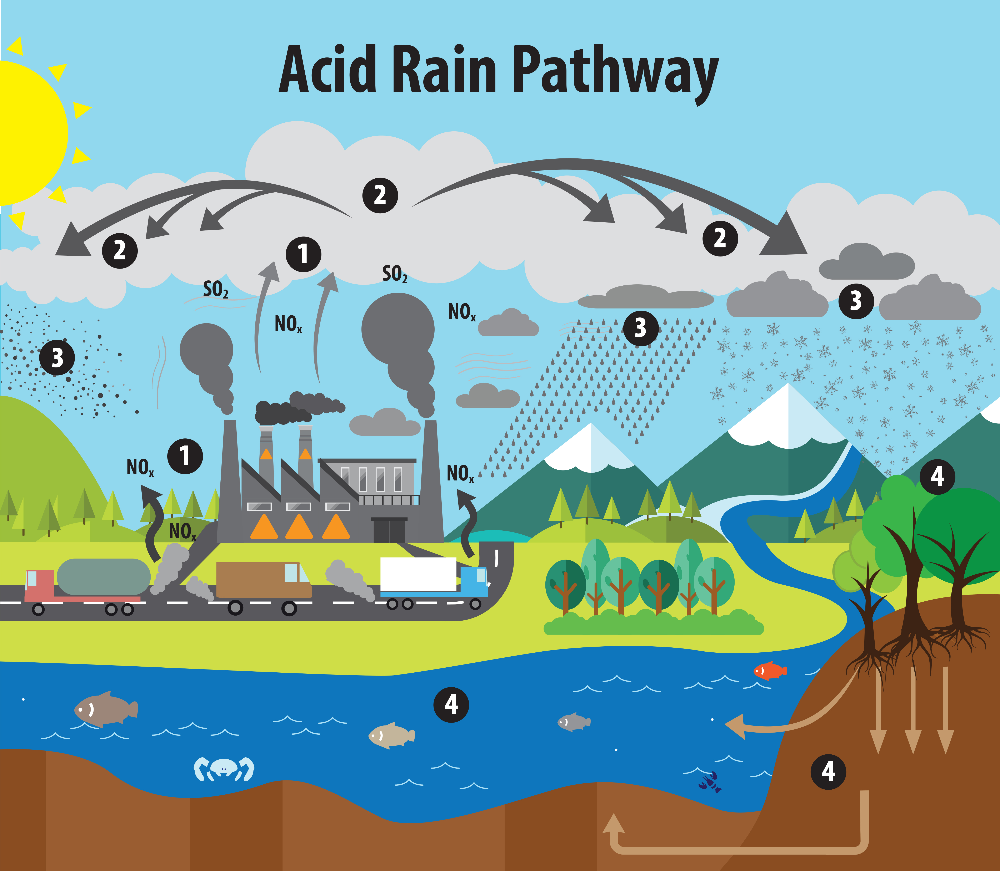
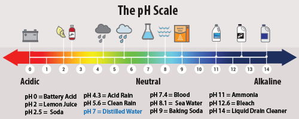
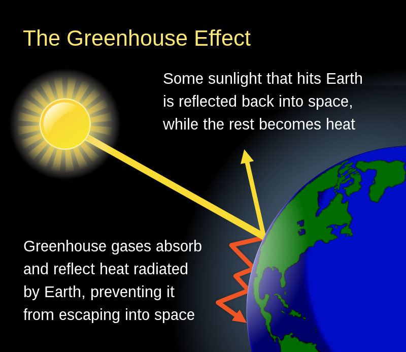
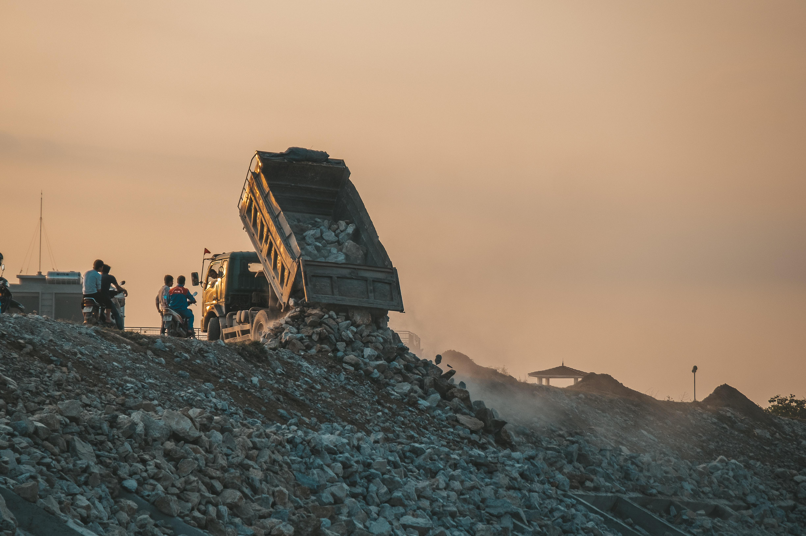
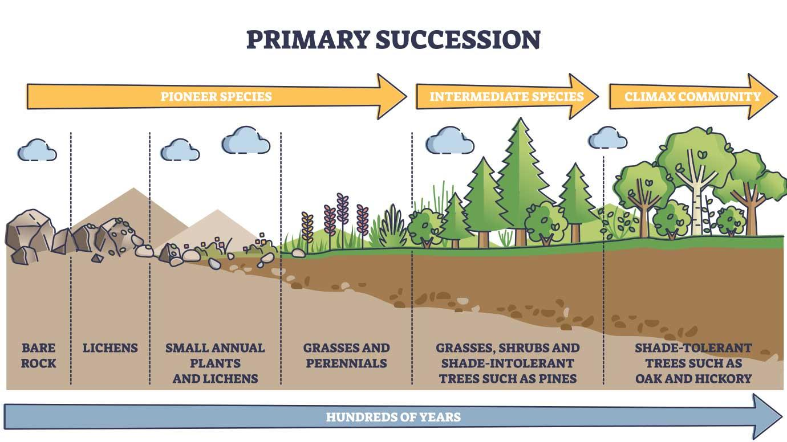
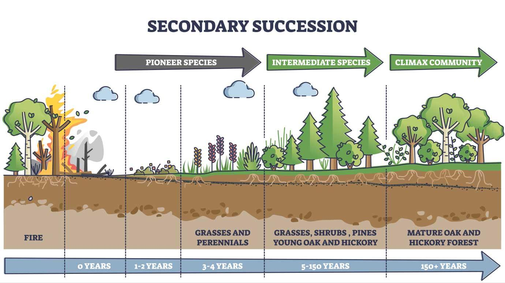

What is Deforestation
Deforestation is the purposeful clearing of forested land. Throughout history and into modern
times, forests have been razed to make space for agriculture and animal grazing, and to obtain
wood for fuel, manufacturing, and construction.
Deforestation has greatly altered landscapes around the world. About 2,000 years ago, 80 percent
of Western Europe was forested; today the figure is 34 percent. In North America, about half of
the forests in the eastern part of the continent were cut down from the 1600s to the 1870s for
timber and agriculture. China has lost great expanses of its forests over the past 4,000 years and
now just over 20 percent of it is forested. Much of Earth’s farmland was once forests.
effects of Deforestation
Today, the greatest amount of deforestation is occurring in tropical rainforests, aided by
extensive road construction into regions that were once almost inaccessible. Building or upgrading
roads into forests makes them more accessible for exploitation. Slash-and-burn agriculture is a
big contributor to deforestation in the tropics. With this agricultural method, farmers burn large
swaths of forest, allowing the ash to fertilize the land for crops. The land is only fertile for a
few years, however, after which the farmers move on to repeat the process elsewhere. Tropical
forests are also cleared to make way for logging, cattle ranching, and oil palm and rubber tree
plantations.
Deforestation can result in more carbon dioxide being released into the atmosphere. That is
because trees take in carbon dioxide from the air for photosynthesis, and carbon is locked
chemically in their wood. When trees are burned, this carbon returns to the atmosphere as carbon
dioxide. With fewer trees around to take in the carbon dioxide, this greenhouse gas accumulates in
the atmosphere and accelerates global warming.
Deforestation also threatens the world’s biodiversity. Tropical forests are home to great numbers
of animal and plant species. When forests are logged or burned, it can drive many of those species
into extinction. Some scientists say we are already in the midst of a mass-extinction
episode.
More immediately, the loss of trees from a forest can leave soil more prone to erosion. This
causes the remaining plants to become more vulnerable to fire as the forest shifts from being a
closed, moist environment to an open, dry one.
While deforestation can be permanent, this is not always the case. In North America, for example,
forests in many areas are returning thanks to conservation efforts.
Case Study
Acid Rain
What is Acid Rain
Acid rain, or acid deposition, is a broad term that includes any form of precipitation with acidic components, such as sulfuric or nitric acid that fall to the ground from the atmosphere in wet or dry forms. This can include rain, snow, fog, hail or even dust that is acidic.
What Causes Acid Rain
Acid rain results when sulfur dioxide (SO2) and nitrogen oxides (NOX) are emitted into the
atmosphere and transported by wind and air currents. The SO2 and NOX react with water, oxygen and
other chemicals to form sulfuric and nitric acids. These then mix with water and other materials
before falling to the ground.
While a small portion of the SO2 and NOX that cause acid rain is from natural sources such as
volcanoes, most of it comes from the burning of fossil fuels. The major sources of SO2 and NOX in
the atmosphere are:
* Burning of fossil fuels to generate electricity. Two thirds of SO2 and one fourth of NOX in the
atmosphere come from electric power generators.
* Vehicles and heavy equipment.
*Manufacturing, oil refineries and other industries.
Winds can blow SO2 and NOX over long distances and across borders making acid rain a problem for
everyone and not just those who live close to these sources.

Forms of Acid Deposition
Wet Deposition
Wet deposition is what we most commonly think of as acid rain. The sulfuric and nitric acids formed in the atmosphere fall to the ground mixed with rain, snow, fog, or hail.
Dry Deposition
Acidic particles and gases can also deposit from the atmosphere in the absence of moisture as dry
deposition. The acidic particles and gases may deposit to surfaces (water bodies, vegetation,
buildings) quickly or may react during atmospheric transport to form larger particles that can be
harmful to human health. When the accumulated acids are washed off a surface by the next rain,
this acidic water flows over and through the ground, and can harm plants and wildlife, such as
insects and fish.
The amount of acidity in the atmosphere that deposits to earth through dry deposition depends on
the amount of rainfall an area receives. For example, in desert areas the ratio of dry to wet
deposition is higher than an area that receives several inches of rain each year.
Measuring Acid Rain
Acidity and alkalinity are measured using a pH scale for which 7.0 is neutral. The lower a
substance's pH (less than 7), the more acidic it is; the higher a substance's pH (greater than 7),
the more alkaline it is. Normal rain has a pH of about 5.6; it is slightly acidic because carbon
dioxide (CO2) dissolves into it forming weak carbonic acid. Acid rain usually has a pH between 4.2
and 4.4.
Policymakers, research scientists, ecologists, and modelers rely on the National Atmospheric
Deposition Program’s (NADP) National Trends Network (NTN) for measurements of wet deposition. The
NADP/NTN collects acid rain at more than 250 monitoring sites throughout the US, Canada, Alaska,
Hawaii and the US Virgin Islands. Unlike wet deposition, dry deposition is difficult and expensive
to measure. Dry deposition estimates for nitrogen and sulfur pollutants are provided by the Clean
Air Status and Trends Network (CASTNET). Air concentrations are measured by CASTNET at more than
90 locations.
When acid deposition is washed into lakes and streams, it can cause some to turn acidic. The
Long-Term Monitoring (LTM) Network measures and monitors surface water chemistry at over 280 sites
to provide valuable information on aquatic ecosystem health and how water bodies respond to
changes in acid-causing emissions and acid deposition.

Case Study
--> Click Here
Global Warming
What is Global Warming
Global warming is the long-term warming of the planet’s overall temperature. Though this warming trend has been going on for a long time, its pace has significantly increased in the last hundred years due to the burning of fossil fuels. As the human population has increased, so has the volume of fossil fuels burned. Fossil fuels include coal, oil, and natural gas, and burning them causes what is known as the “greenhouse effect” in Earth’s atmosphere.

How It's Work
The greenhouse effect is when the Sun’s rays penetrate the atmosphere, but when that heat is reflected off the surface cannot escape back into space. Gases produced by the burning of fossil fuels prevent the heat from leaving the atmosphere. These greenhouse gasses are carbon dioxide, chlorofluorocarbons, water vapor, methane, and nitrous oxide. The excess heat in the atmosphere has caused the average global temperature to rise overtime, otherwise known as global warming.
Effect of global Warming
Global warming has presented another issue called climate change. Sometimes these phrases are used interchangeably, however, they are different. Climate change refers to changes in weather patterns and growing seasons around the world. It also refers to sea level rise caused by the expansion of warmer seas and melting ice sheets and glaciers. Global warming causes climate change, which poses a serious threat to life on earth in the forms of widespread flooding and extreme weather. Scientists continue to study global warming and its impact on Earth.

Over Population
History of world population
| Year | 1806 | 1850 | 1900 | 1940 | 1950 | 1960 | 1970 | 1980 | 1990 | 2000 | 2010 | 2020 |
|---|---|---|---|---|---|---|---|---|---|---|---|---|
| Billions | 1.01 | 1.28 | 1.65 | 2.33 | 2.53 | 3.03 | 3.68 | 4.43 | 5.28 | 6.11 | 6.92 | 7.76 |
On 14 May 2018, the United States Census Bureau calculated the world population as 7,472,985,269 for that same date and the United Nations estimated over 7 billion. In 2017, the United Nations increased the medium variant projections to 9.8 billion for 2050 and 11.2 billion for 2100. The UN population forecast of 2017 was predicting "near end of high fertility" globally and anticipating that by 2030 over two-thirds of the world population will be living in countries with fertility below the replacement level and for total world population to stabilize between 10 and 12 billion people by the year 2100.
Overconsumption
The World Wide Fund for Nature (WWF) and Global Footprint Network have argued that the annual
biocapacity of Earth has exceeded, as measured using the ecological footprint. In 2006, WWF's
Living Planet Report stated that in order for all humans to live with the current consumption
patterns of Europeans, we would be spending three times more than what the planet can renew.
According to these calculations, humanity as a whole was using by 2006 40% more than what Earth
can regenerate. Another study by the WWF in 2014 found that it would take the equivalent of 1.5
Earths of biocapacity to meet humanity's current levels of consumption. However, Roger Martin of
Population Matters states the view: "the poor want to get rich, and I want them to get rich," with
a later addition, "of course we have to change consumption habits,... but we've also got to
stabilise our numbers".
Critics have questioned the simplifications and statistical methods used in calculating ecological
footprints. Therefore, Global Footprint Network and its partner organizations have engaged with
national governments and international agencies to test the results—reviews have been produced by
France, Germany, the European Commission, Switzerland, Luxembourg, Japan and the United Arab
Emirates. Some point out that a more refined method of assessing Ecological Footprint is to
designate sustainable versus non-sustainable categories of consumption.
Carrying capacity
Attempts have been made to estimate the world's carrying capacity for humans; the maximum
population the world can host. A 2004 meta-analysis of 69 such studies from 1694 until 2001 found
the average predicted maximum number of people the Earth would ever have was 7.7 billion people,
with lower and upper meta-bounds at 0.65 and 98 billion people, respectively. They conclude:
"recent predictions of stabilized world population levels for 2050 exceed several of our
meta-estimates of a world population limit".
A 2012 United Nations report summarized 65 different estimated maximum sustainable population
sizes and the most common estimate was 8 billion. Advocates of reduced population often put
forward much lower numbers. Paul R. Ehrlich stated in 2018 that the optimum population is between
1.5 and 2 billion. Geographer Chris Tucker estimates that 3 billion is a sustainable
number.
Critics of overpopulation criticize the basic assumptions associated with these estimates. For
example, associate professor of gender and sexuality Jade Sasser believes that calculating a
maximum of number of humanity is unethical claiming that only some, mostly European former
colonial powers, are mostly responsible for unsustainably using up Earth's resources.
Waste Disposal
waste disposal, the collection, processing, and recycling or deposition of the waste materials of human society. Waste is classified by source and composition. Broadly speaking, waste materials are either liquid or solid in form, and their components may be either hazardous or inert in their effects on health and the environment. The term waste is typically applied to solid waste, sewage (wastewater), hazardous waste, and electronic waste.
waste disposal, the collection, processing, and recycling or deposition of the waste materials of human society. Waste is classified by source and composition. Broadly speaking, waste materials are either liquid or solid in form, and their components may be either hazardous or inert in their effects on health and the environment. The term waste is typically applied to solid waste, sewage (wastewater), hazardous waste, and electronic waste.
In industrialized countries, municipal liquid waste is funneled through sewage systems, where it undergoes wastewater treatment, or sewage treatment. This process removes most or all of the impurities from wastewater, or sewage, before they can reach groundwater aquifers or surface waters such as rivers, lakes, estuaries, and oceans. (For more information on sewage systems and treatment, see wastewater treatment.

Refuse, or municipal solid waste (MSW), is nonhazardous solid waste from a community that requires collection and transport to a processing or disposal site. Refuse includes garbage and rubbish. Garbage is mostly decomposable food waste, and rubbish is mostly dry material such as glass, paper, cloth, or wood. Garbage is highly putrescible or decomposable, whereas rubbish is not. Trash is rubbish that includes bulky items such as old refrigerators, couches, large tree stumps, or construction and demolition waste (e.g., wood, drywall, bricks, concrete, and rebar [a steel rod with ridges for use in reinforced concrete]), all of which often require special collection and handling. Refuse is often deposited in sanitary landfills—that is, pits or other sites sealed with impermeable synthetic bottom liners where waste is isolated from the rest of the environment. (For more information on the treatment of solid wastes, see solid-waste management.)
Some forms of solid and liquid waste are classified as hazardous because they are harmful to human health and the environment. Hazardous wastes include materials that are toxic, reactive, ignitable, corrosive, infectious, or radioactive. Toxic waste is essentially chemical waste from industrial, chemical, or biological processes that can cause injury or death when it is either ingested or absorbed by the skin. Reactive wastes are chemically unstable and react violently or explosively with air or water. Infectious wastes (such as used bandages, hypodermic needles, and other materials from medical and research facilities) are materials that may contain pathogens. Radioactive wastes (such as spent fuel rods containing fissionable materials used in nuclear power generation and isotopes of cobalt and iodine used in cancer treatment and other medical applications) emit ionizing energy that can harm living organisms. Hazardous wastes pose special handling, storage, and disposal challenges that vary according the nature of the material. (For more information on how these materials are treated, see hazardous-waste management.)
Electronic waste, or e-waste, is electronic equipment that has ceased to be of value to users or that no longer satisfies its original purpose as a result of either redundancy, replacement, or breakage. Electronic waste includes both “white goods” such as refrigerators, washing machines, and microwave ovens and “brown goods” such as televisions, radios, computers, and cellular telephones. E-waste differs from traditional municipal waste. Although e-waste contains complex combinations of highly toxic substances (such as lead and cadmium in computers and cellular telephones) that pose a danger to health and the environment, which should be treated as hazardous materials with respect to their disposal, it also contains nonrecyclable parts that enter the municipal solid waste stream. Electronic devices also contain recoverable parts made of gold, silver, platinum, and other valuable materials, as well as recyclable materials (such as plastics and copper), that can be used to make new electronic items. For more information on e-waste, see electronic waste.
Ocean Acidification
What is Ocean Acidification?
In the 200-plus years since the industrial revolution began, the concentration of carbon dioxide (CO2) in the atmosphere has increased due to human actions. During this time, the pH of surface ocean waters has fallen by 0.1 pH units. This might not sound like much, but the pH scale is logarithmic, so this change represents approximately a 30 percent increase in acidity.

The pH scale
The pH scale runs from 0 to 14, with 7 being a neutral pH. Anything higher than 7 is basic (or alkaline) and anything lower than 7 is acidic. The pH scale is an inverse of hydrogen ion concentration, so more hydrogen ions translates to higher acidity and a lower pH.
Carbon dioxide and seawater
Carbon dioxide, which is naturally in the atmosphere, dissolves into seawater. Water and carbon
dioxide combine to form carbonic acid (H2CO3), a weak acid that breaks (or “dissociates”) into
hydrogen ions (H+) and bicarbonate ions (HCO3-).
Because of human-driven increased levels of carbon dioxide in the atmosphere, there is more CO2
dissolving into the ocean. The ocean’s average pH is now around 8.1offsite link, which is basic
(or alkaline), but as the ocean continues to absorb more CO2, the pH decreases and the ocean
becomes more acidic.
Impacts of ocean acidification on shell builders
Ocean acidification is already impacting many ocean species, especially organisms like oysters
and corals that make hard shells and skeletons by combining calcium and carbonate from seawater.
However, as ocean acidification increases, available carbonate ions (CO32-) bond with excess
hydrogen, resulting in fewer carbonate ions available for calcifying organisms to build and
maintain their shells, skeletons, and other calcium carbonate structures. If the pH gets too low,
shells and skeletons can even begin to dissolve.
The pteropod, or "sea butterfly," is a tiny sea snail about the size of a small pea. Pteropods are
an important part of many food webs and eaten by organisms ranging in size from tiny krill to
whales. When pteropod shells were placed in sea water with pH and carbonate levels projected for
the year 2100, the shells slowly dissolved after 45 days. Researchers have already discovered
severe levels of pteropod shell dissolutionoffsite link in the Southern Ocean, which encircles
Antarctica.
Ocean acidification impacts on fish and seaweeds
Changes in ocean chemistry can affect the behavior of non-calcifying organisms as well. The
ability of some fish, like clownfish, to detect predators is decreased in more acidic waters.
Studies have shown that decreased pH levels also affect the ability of larval clownfishoffsite
link to locate suitable habitat. When these organisms are at risk, the entire food web may also be
at risk.
While some species will be harmed by ocean acidification, algae and seagrasses may benefit from
higher CO2 conditions in the ocean, as they require CO2 for photosynthesis just like plants on
land. There are some ongoing studies examining if growing seaweed can help slow ocean
acidification.
Our changing ocean
Estimates of future carbon dioxide levels, based on business-as-usual emission scenarios,
indicate that by the end of this century the surface waters of the ocean could have a pH around
7.8 The last time the ocean pH was this low was during the middle Miocene, 14-17 million years
ago. The Earth was several degrees warmer and a major extinction event was occurring.
Ocean acidification is currently affecting the entire ocean, including coastal estuaries and
waterways. Billions of people worldwide rely on food from the ocean as their primary source of
protein. Many jobs and economies in the U.S. and around the world depend on the fish and shellfish
that live in the ocean.
Current research
Ocean acidification is one aspect of global climate change. Anything we do to mitigate climate
change today will benefit the future of the ocean as well. Over the last decade, there has been
much focus in the ocean science community on studying the potential impacts of ocean
acidification. NOAA's Ocean Acidification Program serves to build relationships between
scientists, resource managers, policy makers, and the public in order to research and monitor the
effects of changing ocean chemistry on economically and ecologically important ecosystems such as
fisheries and coral reefs.
Because sustained efforts to monitor ocean acidification worldwide are only beginning, it is
currently impossible to predict exactly how ocean acidification impacts will cascade throughout
the marine food web and affect the overall structure of marine ecosystems. With the pace of ocean
acidification accelerating, scientists, resource managers, and policymakers recognize the urgent
need to strengthen the science as a basis for sound decision making and action.
Ozon Layer Depletion
What is Ozon layer Depletion
Ozone layer depletion is the gradual thinning of the earth’s ozone layer in the upper atmosphere caused due to the release of chemical compounds containing gaseous bromine or chlorine from industries or other human activities.
Ozone layer depletion is the thinning of the ozone layer present in the upper atmosphere. This
happens when the chlorine and bromine atoms in the atmosphere come in contact with ozone and
destroy the ozone molecules. One chlorine can destroy 100,000 molecules of ozone. It is destroyed
more quickly than it is created.
Some compounds release chlorine and bromine on exposure to high ultraviolet light, which then
contributes to ozone layer depletion. Such compounds are known as Ozone Depleting Substances
(ODS).
The ozone-depleting substances that contain chlorine include chlorofluorocarbon, carbon
tetrachloride, hydrochlorofluorocarbons, and methyl chloroform. Whereas, the ozone-depleting
substances that contain bromine are halons, methyl bromide, and hydro bromofluorocarbons.
Chlorofluorocarbons are the most abundant ozone-depleting substance. It is only when the chlorine
atom reacts with some other molecule, it does not react with ozone.
Montreal Protocol was proposed in 1987 to stop the use, production and import of ozone-depleting
substances and minimise their concentration in the atmosphere to protect the ozone layer of the
earth.
Ozone-depleting substances are the substances such as chlorofluorocarbons, halons, carbon tetrachloride, hydrofluorocarbons, etc. that are responsible for the depletion of the ozone layer.
Effects Of Ozone Layer Depletion
The depletion of the ozone layer has harmful effects on the environment. Let us see the major
effects of ozone layer depletion on man and environment.
Effects on Human Health
* Humans will be directly exposed to the harmful ultraviolet radiation of the sun due to the
depletion of the ozone layer. This might result in serious health issues among humans, such as
skin diseases, cancer, sunburns, cataract, quick ageing and weak immune system.
Effects on Animals
* Direct exposure to ultraviolet radiations leads to skin and eye cancer in animals.
Effects on the Environment
* Strong ultraviolet rays may lead to minimal growth, flowering and photosynthesis in plants. The
forests also have to bear the harmful effects of the ultraviolet rays.
Effects on Marine Life
* Planktons are greatly affected by the exposure to harmful ultraviolet rays. These are higher in
the aquatic food chain. If the planktons are destroyed, the organisms present in the food chain
are also affected.

Solutions to Ozone Layer Depletion
The depletion of the ozone layer is a serious issue and various programmes have been launched by
the government of various countries to prevent it. However, steps should be taken at the
individual level as well to prevent the depletion of the ozone layer.
Following are some points that would help in preventing this problem at a global level:
Avoid Using ODS
Reduce the use of ozone depleting substances. E.g. avoid the use of CFCs in refrigerators and air
conditioners, replacing the halon based fire extinguishers, etc.
Minimise the Use of Vehicles
The vehicles emit a large amount of greenhouse gases that lead to global warming as well as ozone
depletion. Therefore, the use of vehicles should be minimised as much as possible.
Use Eco-friendly Cleaning Products
Most of the cleaning products have chlorine and bromine releasing chemicals that find a way into
the atmosphere and affect the ozone layer. These should be substituted with natural products to
protect the environment.
Use of Nitrous Oxide should be Prohibited
The government should take actions and prohibit the use of harmful nitrous oxide that is adversely
affecting the ozone layer. People should be made aware of the harmful effects of nitrous oxide and
the products emitting the gas so that its use is minimised at the individual level as well.
Ecological Succession
What is Ecological Succession
Ecological succession is the process by which the mix of species and habitat in an area changes
over time. Gradually, these communities replace one another until a “climax community”—like a
mature forest—is reached, or until a disturbance, like a fire, occurs.
Ecological succession is a fundamental concept in ecology. The study of succession was pioneered
at the University of Chicago by Henry Chandler Cowles, who was also one of the founders of ecology
as a discipline, as he studied the plants of the Indiana Dunes.
Ecological succession is the process by which natural communities replace (or “succeed”) one
another over time. For example, when an old farm field in the midwestern U.S. is abandoned and
left alone for many years, it gradually becomes a meadow, then a few bushes grow, and eventually,
trees completely fill in the field, producing a forest.
Each plant community creates conditions that subsequently allow different plant communities to
thrive. For example, early colonizers like grasses might add nutrients to the soil, whereas later
ones like shrubs and trees might create cover and shade. Succession stops temporarily when a
“climax” community forms; such communities remain in relative equilibrium until a disturbance
restarts the succession process.
types of Ecological Succession
1. Primary Succession
2. Secondary Succession
Primary Succession
Primary succession happens when a new patch of land is created or exposed for the first time.
This can happen, for example, when lava cools and creates new rocks, or when a glacier retreats
and exposes rocks without any soil. During primary succession, organisms must start from scratch.
First, lichens might attach themselves to rocks, and a few small plants able to live without much
soil might appear. These are known as “pioneer species.”
Gradually, the decomposition of those plants contributes to soil formation, and more and larger
plants begin to colonize the area. Eventually, enough soil forms and enough nutrients become
available such that a climax community, like a forest, is formed. If the site is disturbed after
this point, secondary succession occurs.

Secondary Succession
Secondary succession happens when a climax community or intermediate community is impacted by a
disturbance. This restarts the cycle of succession, but not back to the beginning—soil and
nutrients are still present.
For example, after a forest fire that kills all the mature trees on a particular landscape,
grasses might grow, followed by shrubs and a variety of tree species, until eventually the
community that existed before the fire is present again.

What is a climax community?
A climax community is the “endpoint” of succession within the context of a particular climate and
geography. In the midwestern U.S., for example, such a community might be a hardwood forest with
oaks and hickories as the dominant tree species.
A climax community will persist in a given location until a disturbance occurs. However, in many
ecosystems, disturbance occurs frequently enough that a matrix of community types may be
consistently present on the landscape.
For example, in an area prone to wildfires like the western U.S., mature forests may exist near
grassy meadows with fewer, scattered trees. Consistent disturbance and variation in factors like
water and nutrient availability over the course of decades thus allows many plant and animal
communities to thrive within a particular climatic and geographic niche—not just those adapted to
the absence of disturbance seen in climax communities.
What is an example of ecological succession?
Ecological succession can occur in many contexts and over many time spans.
In Hawaii and Iceland, primary succession occurs on lava flows where new land has formed; in
Canada’s Athabasca Dunes, it happens when new sand is deposited along a lakeshore; in the Andes,
it occurs when glaciers retreat.
In many regions, secondary succession occurs where wildfires have destroyed conifer forests, or
where former agricultural land is reverting to meadow or scrubland.
What these examples have in common is that the climax community is not the first one present on
the landscape after succession begins: First, intermediate communities occupy the space, sometimes
for many years, creating ideal conditions for the communities that follow.
Plant succession at the Indiana Dunes
The Indiana Dunes, 40 miles southeast of Chicago and today the site of both a state and a
national park, served as the original field site for research on ecological succession in plant
communities, and continue to serve as an ideal case study. (If you visit the dunes, you can walk
along the Dune Succession Trail, which highlights the different stages of succession in a
real-world context.)
In the 1890s, University of Chicago botanist Henry Chandler Cowles noticed that dunes which were
further from Lake Michigan had different plants growing on them than dunes closer to the lake. The
lakeside dunes had only beach grass, whereas those further from the shore had other plants like
cottonwoods that could grow in sandy soil. Dunes still further back had pines, and finally behind
them were mature oak forests that did not resemble the grassy dunes near the lake at all.
Through careful observation and comparisons, Cowles determined that the linear succession of these
communities in space also represented a linear progression in time. The dunes farthest from the
lake were the oldest and had been stable for longest, since sand shifts frequently in the wind
without plants to hold it in place.
From this, he inferred that plant communities trended toward oak forests in northern Indiana over
decades and centuries, and that each community created the soil and microclimate conditions
required for its successor community to thrive: as grasses and cottonwoods stabilized dunes and
added nutrients, they were replaced by later successional communities.